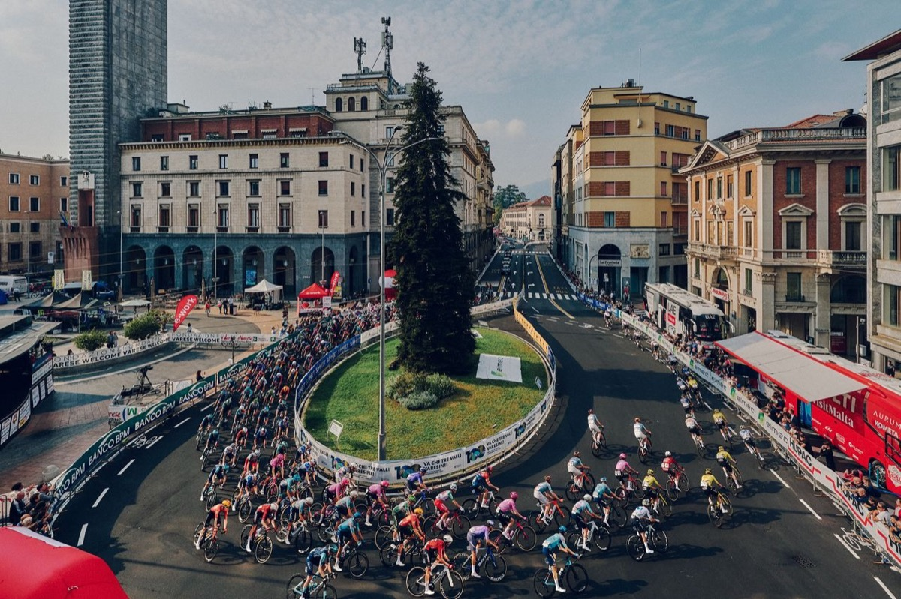

La Tre Valli Varesine, che si tiene nella nostra città ogni anno a ottobre, è la settima gara di ciclismo più seguita al mondo.
Tappa di 5Stage of 5
Devi sapere che…Did you know…
The Tre Valli Varesine, held in our city every October, is the seventh most followed cycling race in the world.

Alfredo Binda non l'ha mai vinta, ma indovina chi è salito sul podio nel 1930?Alfredo Binda never won it, but guess who made the podium in 1930?
Ebbene sì: il fratello minore, Albino Binda, che completò il percorso in 6h51'00" precedendo i connazionali Luigi Ferrando e Riccardo Proserpio. Conclusero la prova solo 11 ciclisti.That's right: his younger brother, Albino Binda, who finished the course in 6h51'00", ahead of fellow Italians Luigi Ferrando and Riccardo Proserpio. Only 11 riders completed the race.
Lo sapevi?Did you know that?
Allora sei un vero esperto! 😉 Ecco il prossimo indizio, qui sotto 👇Then you're a real expert! 😉 Here's your next clue, just below 👇
Non ti preoccupare, ti daremo lo stesso il prossimo indizio 😉 Eccolo qui sotto 👇Don't worry, you still get the next clue 😉 It's just below 👇
Indizio per la tappa 3Clue for stage 3
Altri platani dovrai costeggiare,
ma prima un calcolo devi fare:
risolvilo bene e lo scoprirai,
e il QR code così troverai!
5 + 5 × 2 − 20 : 4 = ?More plane trees to walk beside,
but first a sum must be your guide:
solve it right and you will see
where the QR code will be!
5 + 5 × 2 − 20 ÷ 4 = ?